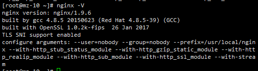
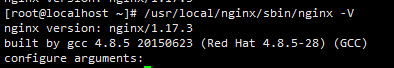

nginx实现TCP/UDP端口转发
前言
服务器完成nginx安装配置，通过nginx结合stream模块实现对服务器实现socket端口的转发，实现本机、跨服务器的端口转发。
配置端口转发
前期工作
查看nginx服务器是否支持stream：
1 | nginx -V |
有stream模块

无stream模块

nginx增加stream模块
进入源码目录
1 | cd nginx-1.9.6 |
配置编译选项
增加–with-stream模块
1 | ./configure \ |
编译
执行make指令，千万不要执行make install,因为会将原来的安装nginx覆盖
1 | make |
关闭nginx并启用新的nginx
1 | #关闭nginx |
启动nginx并测试
1 | #启动nginx |
结果：有stream模块。
配置nginx.conf文件
nginx.conf文件结构
http与stream数据同级模块，因此不要将stream放在http层。
1
2
3
4
5
6
7
8
9
10
11
12events {
worker_connections 1024;
}
#http模块
http {
...
}
#stream模块
stream {
...
}配置映射转发
1
2
3
4
5
6
7
8
9
10
11stream {
upstream redis {
server 172.16.3.8:6379 weight=5;
}
server {
listen 8080;
proxy_responses 1;
proxy_timeout 20s;
proxy_pass redis;
}
}
重新加载nginx
1 | # 检测配置文件 |
测试转发接口
- 方式一：telnet xxxx 8080
- 方式二：通过工具连接 redis
相关参照
本博客所有文章除特别声明外，均采用 CC BY-NC-SA 4.0 许可协议。转载请注明来自 haydenzhou小木屋！
相关推荐

评论